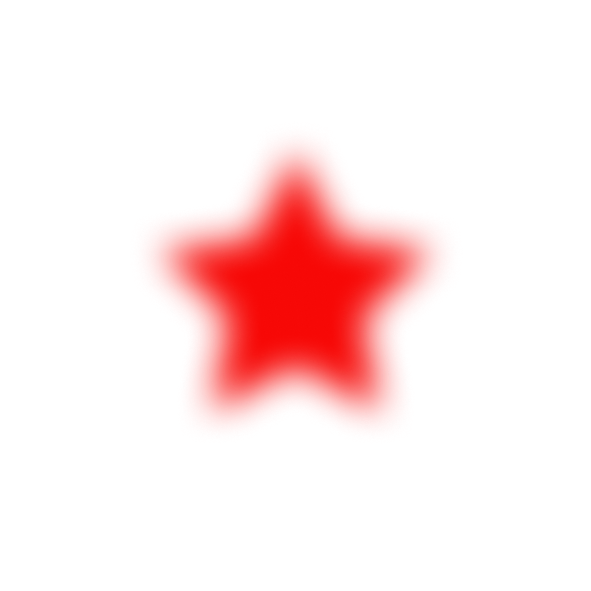

About meI am finishing my bachelors degree in mathematics at TUM with a minor in computer science.
I wrote my bachelors thesis on the Efficient computation of Euler characteristic profiles for 3-channel digital images in the field of topological data analysis (TDA). As part of my thesis I developed the euprima Python package in C++. Moreover, I formalized the difference array method for general dimension and developed further optimizations. I presented my findings for the Geometry and Topology reasearch group at TUM (slides).
Since March 2025 I am working as a student assistant at TUM for the interuniversity SASIM collaboration.
My primary mathematical interests are topological data analysis (TDA), algebraic topology, category theory, and abstract algebra.
Apart from my studies, I am extremely curious about design, particularly typography. I also enjoy bird photography with an old Nikon D200.
When I have more free time, I like to work on various coding projects most of which can be found on my GitHub account, @mazmap. A selected few are listed below.
Currently, I am most comfortable with Java, Python and JavaScript. I have worked with Typescript and Dart (Flutter) before and have started working with C++ for the euprima package. Recently I started working with C# and Avalonia UI. I version all my digital projects with Git.
Here’s a list of things I have worked on or am currently still working on:
euprima Github: A software package for efficiently computing Euler (characteristic) profiles for image analysis mainly written in C++ and ported to Python using pybind11. More information is given in the README on Github.
Multidimensional Difference Arrays Github: Slides for a talk on my work on the formalization of multidimensional difference arrays at the Geometry and Topology research group at TUM.
gaussEx.sty Github: Reimplementation and expansion of the LaTeX 2𝜀 package gauss in LaTeX3 (expl3) syntax by modern conventions.
Schnupperstunde Mathematik Github: German Abitur script in LaTeX for mathematics, designed to teach students the true core of mathematics far beyond "school mathematics". Based on my own script from 12th grade Shortlink to OneDrive.